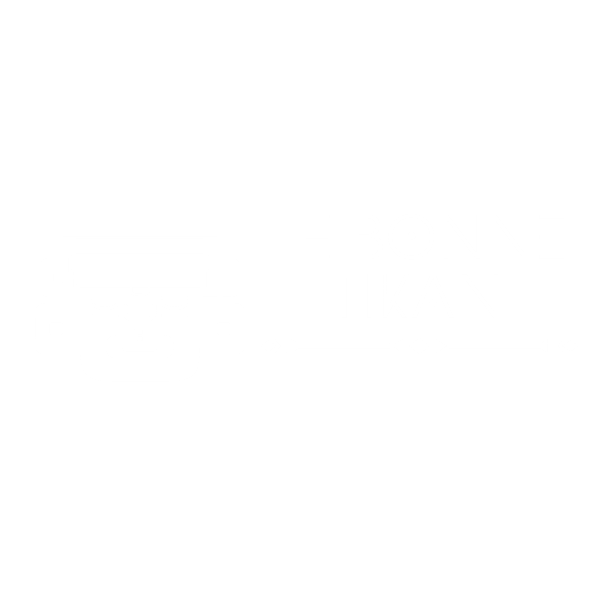

Conocemos el terreno, las rutas y los tiempos reales de Guatemala.
Operamos en el país coordinando circuitos, traslados y experiencias a la medida del viajero, para que cada itinerario se cumpla con precisión.
Itinerarios diseñados según el tiempo disponible y los intereses de cada viajero.
Movilidad dentro del país, coordinada punto a punto según el destino.
Actividades y recorridos diseñados a partir de lo que el viajero busca conocer.
Traslados de una sola vía hacia los destinos de mayor demanda dentro del país.
Recorridos por mercados, textiles y sitios que mantienen viva la herencia de los pueblos mayas de Guatemala.
Rutas compartidas al estilo mochilero, pensadas para quienes prefieren viajar en grupo y conocer a otros viajeros en el camino.
Elige los lugares que quieres conocer. Nosotros nos encargamos de la logística y los traslados.
Aún no has elegido lugares.
Cuéntanos qué destino te interesa o qué tipo de experiencia buscas y te respondemos a la brevedad.
Escribir por WhatsAppSi no se abre tu programa de correo, copia la dirección y escríbenos desde donde prefieras.